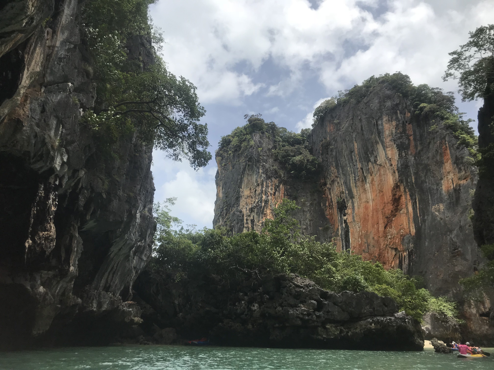

Amanda Hoang || 黄雅丽
Hello there!
Welcome to my lovely website~
Here, you will learn lots about me (:
I have two dogs! This one is Lady:

And this one is Charlie!

I live in a family of 4, who often likes to travel the world! We've been to China, Hong Kong, Cancun, Japan, and Thailand (for the most part)!
Here are some pictures!
Bangkok:

Krasom:

Pattaya:


When I'm not traveling, I like going out and hanging out with my friends! I also enjoy playing video games, listening to music, and working out. I often spend my time at home, but more recently, I've been going out more frequently to exercise and exploring the areas near my home! It's a nice experience and I've never been so happy in my life (:
I am currently 17; my birthday is on April 30th. I'm going to be a senior this upcoming school year at American Indian Public High School. Honestly very nervous about it, but I can't wait to end the year with my friends! I value my relationships dearly and I hope I can maintain them throughout the year!